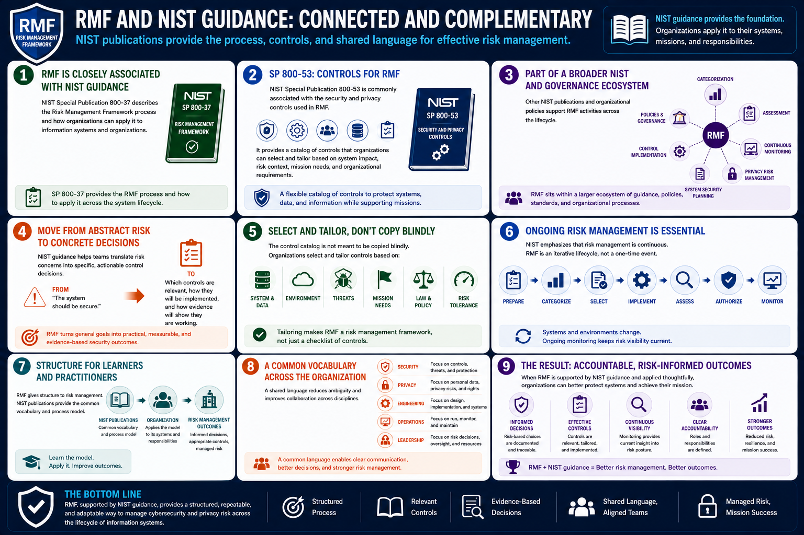

What Is RMF?
RMF and NIST
Connecting to LMS... Progress: in progress
Version 1.0 | Date: 2026-06-16 | Educational overview of Risk Management Framework concepts.

Narration
RMF is closely associated with NIST guidance. NIST Special Publication 800-37 describes the Risk Management Framework process and how organizations can apply it to information systems and organizations.
NIST Special Publication 800-53 is commonly associated with the security and privacy controls used in RMF. It provides a catalog of controls that organizations can select and tailor based on system impact, risk context, mission needs, and organizational requirements.
Other NIST publications and organizational policies may support categorization, assessment, continuous monitoring, privacy risk management, system security planning, and control implementation. RMF often sits within a broader governance ecosystem.
In practice, NIST guidance helps teams move from abstract risk concerns to concrete control decisions. Instead of saying a system should be secure, RMF helps teams define which controls are relevant, how they will be implemented, and how evidence will show that they are working.
The control catalog is not meant to be copied blindly. Organizations select and tailor controls based on the system, data, environment, threats, mission, law, policy, and risk tolerance. This tailoring is one reason RMF is a risk management framework rather than only a checklist.
NIST also emphasizes ongoing risk management. The framework includes preparation, categorization, selection, implementation, assessment, authorization, and continuous monitoring because systems and environments change over time.
For learners, the important point is that RMF gives structure to risk management. NIST publications provide the common vocabulary and process model, while each organization applies that model to its own systems and responsibilities.
This common vocabulary matters in large organizations. It allows security, privacy, engineering, operations, and leadership teams to discuss controls and risk with less ambiguity.